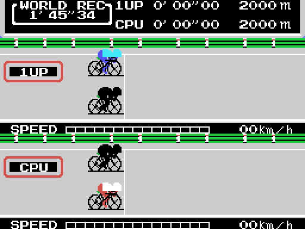
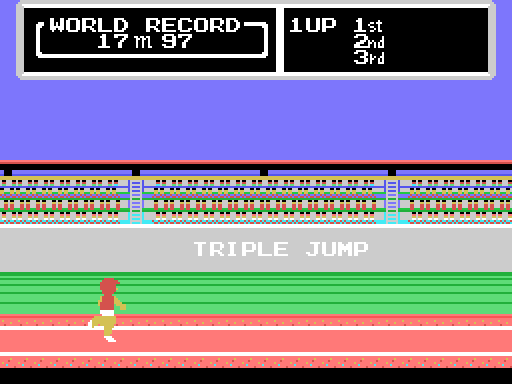
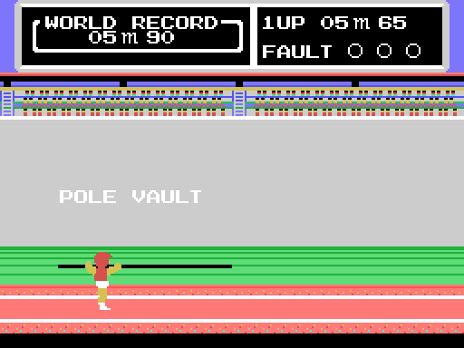
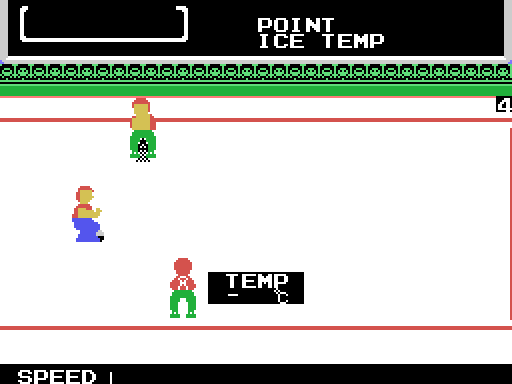

Hyper Sports 3 es de 1985 y son cuatro pruebas, en este orden:
| (0xE06A) & 3 | prueba | rótulo | marca de salida |
|---|---|---|---|
| 0 | ciclismo | CYCLING | 1'45"34 |
| 1 | triple salto | TRIPLE JUMP | 17,97 m |
| 2 | curling | CURLING | 100 puntos |
| 3 | salto con pértiga | POLE VAULT | 5,90 m |
El orden no se supone: lo dice la tabla de 0x5A90, que es la que el código de 0x5913 indexa con (0xE06A) & 3. Y ese mismo índice reparte el motor de cada prueba en la tabla de 0x5548. Ahí sale una cosa que no se ve jugando: el triple salto y el salto con pértiga comparten motor, los dos entran por 0x5550. El ciclismo y el curling van a sitios propios.

Es la prueba que más se sale de lo normal. El circuito no está en la VRAM. Vive en dos ventanas de la RAM —0xE140 y 0xE260, nueve filas de treinta y dos casillas cada una—, se desplaza una columna por fotograma y se vuelca entero a la pantalla.
Y el ciclista tampoco es un sprite: son cuatro casillas de la tabla de patrones. Para que se pueda mover al píxel siendo casillas, 0x9CC7 genera al arrancar la prueba ocho copias del dibujo corridas un píxel cada una, rotando los bits y metiendo unos por delante para sacar de paso la máscara. Encima de esas cuatro casillas van cinco sprites, que son el corredor.
En la ventana de cada jugador se ve al otro, con seis casillas en vez de cuatro, dieciséis filas más arriba.

Comparten pantalla y comparten motor; solo cambian el listón y la longitud de la pista. La pista se guarda dos veces, en su sitio y corrida cuatro píxeles, y el juego alterna entre las dos: por eso se mueve de medio tile en medio tile. El corrimiento se hace en la RAM, con sla y rl encadenados sobre doce tiles seguidos.
Las marcas de las dos pruebas están en BCD en 0x757D: ocho para el triple salto, de 13,00 a 20,00 m, y diez para la pértiga, de 5,65 a 5,94. La sexta del triple salto, 17,89 m, era la marca del mundo de Joao Carlos de Oliveira cuando salió el cartucho.

El atleta no es un sprite, son de dos a siete sprites de 16x16 puestos uno al lado de otro, y sus patrones no están en la VRAM de antes: se descomprimen ahí en cada fotograma. Por eso el cartucho puede tener cientos de posturas sin que quepan a la vez en los 2 KB de patrones de sprite.
En la carrerilla de la pértiga el atleta ni siquiera sale de una tabla de figuras: se compone de dos bloques distintos —tres piezas de 0x6E15 y las que traiga 0x6B6A— más el sprite de la punta de la pértiga y las doce casillas de la pértiga en sí.

La más cargada de las cuatro. La mitad derecha del hielo no está guardada en ninguna parte: se espeja a mano, bit a bit, al montar la pantalla. Los círculos de la casa se dibujan con una rutina de rectángulos con recorte que tiene en cuenta el desplazamiento de la pantalla, y en el arranque quedan fuera de la vista.
Y la piedra no se dirige con ángulos: las dos curvas que la mueven normalizan el vector —lo dividen por su módulo aproximado— y se quedan con las dos componentes.
No la juega nadie. Está grabada: cada prueba tiene su cinta de mandos guardada en la ROM y el bucle la va soltando fotograma a fotograma como si fuera el mando. Por eso la demostración hace siempre exactamente lo mismo.
La excepción es el ciclismo, que no tiene grabación: ahí el rival se mueve con ld a,r —el registro de refresco de la DRAM— usado como dado.